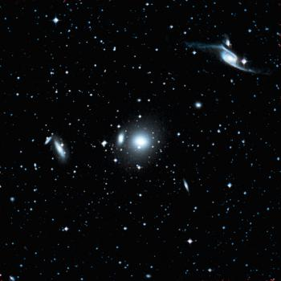
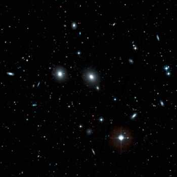

يظهر لنا هذا الرسم توزع المجرات ضمن مقياس 200 مليون سنة ضوئية. و توضح المناطق في الفضاء المحيطة بعنقود العذراء الفائق. و العنقود المسيطر داخل هذه المنطقة هو عنقود قنطورس المجري الفائق و الذي يشاهد منتشرا من عنقود العذراء الفائق. تمت تسمية عنقود قنطورس الفائق من العنقود الكبير قنطورس (A3526) ، بالإضافة الى أن الطرف القريب من العنقود الفائق ظاهر في هذه الخريطة. و يقع عنقود حية الماء Hydra cluster الكبير أسفل عنقود العذراء الفائق و يسمى (A1060). و إلى الطرف اليساري من الخريطة يوجد بعض العناقيد المجرية الأقرب الموجودة في العنقود الهندي - الطاووس Pavo-Indus الفائق و التي في معظمها تقع بعيدا الى ما وراء حدود الخريطة و هي 200 مليون سنة ضوئية. و يظهر في هذه الخريطة العديد من الفجوات المعروفة voids - هذه الفجوات هي مناطق يتواجد فيها القليل من المجرات ووفق المعايير الكوسمولوجية فإنه لا تعتبر الفجوات الأقرب إلينا أنها كبيرة. يوجد هنا نسخة نيكاتيف لهذه الخريطة و يمكن طباعتها.
هنا لائحة بأغلب التجمعات و العناقيد المجرية الكبيرة الموجودة ضمن مقياس 200 مليون سنة ضوئية. العناقيد المهيمنة هي ثلاثة عناقيد ،: العذراء، قنطورس، حية الماء . و هناك عنقود آخر غني بالمجرات في هذه المناطق و يسمى بعنقود آبل Abell cluster ( A3565 ) .
{لمن أراد معرفة مصطلحات أسماء الكوكبات يمكنك الرجوع إلى صفحة المخطط المجري إذ فيه لائحة بأسماء الكوكبات باللغة العربية و مقابلها بالإنكليزية.}
| |
العمود 1: الاسم المعتاد للعنقود المجري. العمود 2: إحداثي المطلع المستقيم بالساعات و الدقائق من الحولية الفلكية للعام 2000. العمود 3: إحداثي الميل بالدرجات و الدقائق من الحولية الفلكية للعام 2000. العمود 4: إحداثي الطول المجري الفائق. العمود 5: إحداثي العرض المجري الفائق. العمود 6: عدد المجرات الكبيرة في العنقود المجري، و هذا الرقم تقريبي. العمود 7: سرعة الهروب (التقهقر) للعنقود المجري. العمود 8: المسافة التقريبية المقدرة إلى العنقود المجري بالسنين الضوئية. العمود 9: اسم العنقود الفائق الذي ينتمي إليه العنقود المجري. | |
References:
Fouque P, Gourgoulhon E, Chamaraux P, Paturel G, (1992), Groups of Galaxies within
80 Mpc, Astron Astrophys Supp, 93, 211.
Garcia A, (1993), General study of group membership. II. Determination of nearby groups.
Astron Astrophys Supp, 100, 47.
Giuricin G, Marinoni C, Ceriani L, Pisani A, (2000), Nearby optical galaxies: selection
of the sample and identification of groups. Astrophys J, 543, 178.
|
لدينا الكثير من اللاحتمية من معلومات حول عنقود الكوثل المجري، فهو يقع خلف المستوي المجري المحجوب بشدة عبر مجرتنا. و ليس من المؤكد وجود عنقود حقيقي هنا، على الرغم من وجود مجرات في هذه المنطقة. و يفترض فيما لو كان عنقود الكوثل موجودا ، فإنه قد يكون بحجم عنقود الكور و ربما يبعد مسافة أقل بقليل من 100 مليون سنة ضوئية.
وبكلام آخر، فإنه من المحتمل أن لايكون لعنقود السرطان وجود أبدا . فالدراسات الدقيقة في هذه المنطقة من السماء أثبتت وجود عناقيد العديد من المجموعات المجرية الصغيرة بجانب بعضها البعض.
|  |  |
{kind=link}